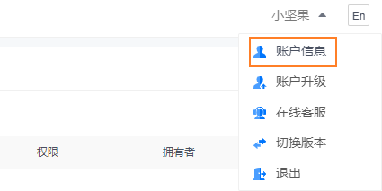
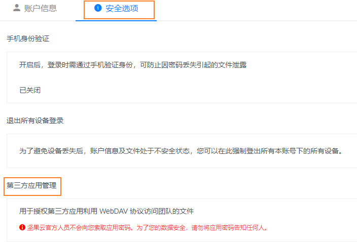
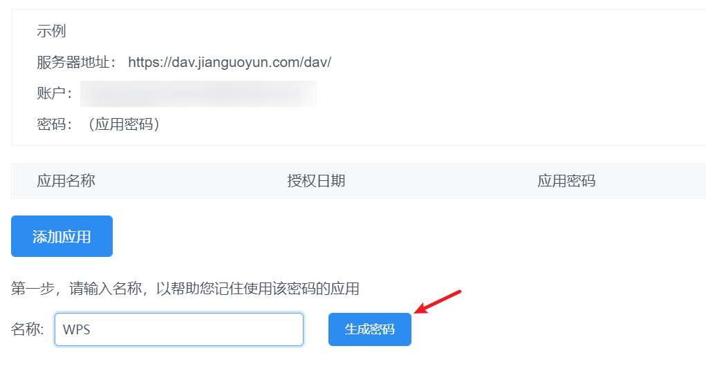
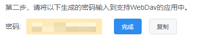
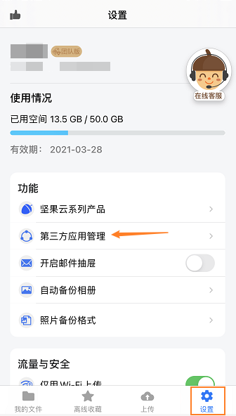
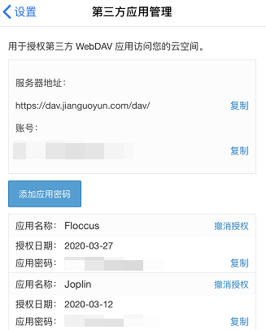

教程播放记录同步
三分钟，
把进度接回你自己的盘
手机上看到第 17 集，电脑打开接着播。不用注册账号，不用登录， 记录只写进你自己的 WebDAV —— 我们不经手，也看不到。
先记住这三个字段
不管你用哪家服务，App 里「设置 → 播放记录同步」要填的都是这三样。 照着下面填，基本不会出错。
https://dav.jianguoyun.com/dav/
坚果云的固定地址，结尾那个斜杠别丢
你注册坚果云用的邮箱或手机号
就是登录网页端时填的那个
在坚果云里生成的「应用密码」
不是你的登录密码，下一步就讲怎么拿
用坚果云接上（免费，最省事）
坚果云免费版就能用 WebDAV，容量够放播放记录。 你要做的只有一件事：生成一串应用密码。
- 01
-
02
添加应用密码
在「安全选项」里找到 第三方应用管理，点 添加应用密码， 名字随便起（比如「短剧之家」），然后点生成。
安全选项›第三方应用管理›添加应用密码这串密码只在生成时显示一次，关掉窗口就再也看不到了 —— 当场复制下来。看不到就删掉重新生成一个，不影响已有数据。 另外，它是应用专用密码，不等于你的登录密码，填错了一定连不上。 -
03
回到 App，把三项填进去
打开短剧之家 → 设置 → 播放记录同步， 把上面三项填好保存。手机和电脑用同一组配置即可。
设置›播放记录同步 -
04
看一眼是不是真的通了
手机上随便看一集，退出去；再打开电脑版，如果它从同一个位置接着播， 就说明通了。两端同时看过同一集时，自动保留最新的那个进度。
看坚果云官方截图 6 张






参考： 坚果云帮助中心 · 第三方应用授权 WebDAV 开启方法 （本页截图亦引自该页，版权归坚果云所有）
用别的盘怎么填
只要是标准 WebDAV 都能接。下面这些是常见默认值， 端口和路径以你自己装的时候为准。
https://dav.jianguoyun.com/dav/
注册邮箱或手机号 / 应用密码
http://192.168.x.x:5005/dav/
DSM 账号 / 密码。需先在套件中心装并启用「WebDAV Server」，https 走 5006
http://你的地址:5244/dav
你自己在 OpenList 里建的用户名 / 密码
192.168.x.x 这种家里地址的话，
手机连的是你家 Wi-Fi 才连得上；出门用流量就连不到了。
想在外面也能同步，得给家里的服务做内网穿透，或者直接用坚果云这种公网服务。
坚果云这边有几个限制
同步播放记录本身几乎不占额度，这些限制基本碰不到。 但如果你打算顺手用它存别的东西，先知道一下：
- 单文件 500MWebDAV 与网页端一致，私有云可自行调整
- 访问频率免费版每 30 分钟不超过 600 次请求，付费版 1500 次
- 单次列出 750 项一次请求最多返回 750 个文件和文件夹，支持分页多次加载
连不上，先查这五处
九成的问题都出在前两条。
- 地址末尾少了斜杠
https://dav.jianguoyun.com/dav/最后那个 / 必须有 - 密码填成了登录密码必须填坚果云里生成的那串应用密码，不是你的账号密码
- 手机不在同一个网里填的是内网地址时，手机得连着家里 Wi-Fi；用流量就连不上
- 群晖没开服务套件中心的「WebDAV Server」要装、要启用，防火墙要放行 5005 / 5006
- https 证书不被信任自建服务用了自签证书时，部分设备会直接拒连